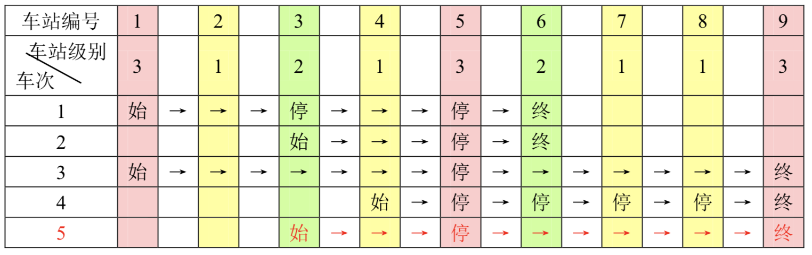

一条单向的铁路线上，依次有编号为1, 2, ..., n的n个火车站。每个火车站都有一个级别，最低为1级。现有若干趟车次在这条线路上行驶，每一趟都满足如下要求:如果这趟车次停靠了火车站x，则始发站、终点站之间所有级别大于等于火车站x的都必须停靠。（注意：起始站和终点站自然也算作事先已知需要停靠的站点）
例如，下表是5趟车次的运行情况。其中，前4趟车次均满足要求，而第5趟车次由于停靠了3号火车站（2级）却未停靠途经的6号火车站（亦为2级）而不满足要求。

现有m趟车次的运行情况（全部满足要求），试推算这n个火车站至少分为几个不同的级别。
第一行包含2个正整数n,m，用一个空格隔开。
第$i+1$行（$1 ≤i≤m$）中，首先是一个正整数$s_i(2 ≤s_i≤n)$，表示第$i$趟车次有$s_i$个停靠站；接下来有$s_i$个正整数，表示所有停靠站的编号，从小到大排列。每两个数之间用一个空格隔开。输入保证所有的车次都满足要求。
输出只有一行，包含一个正整数，即n个火车站最少划分的级别数。
9 2 4 1 3 5 6 3 3 5 6
2
9 3 4 1 3 5 6 3 3 5 6 3 1 5 9
3
【数据范围】
对于20%的数据，$1 ≤n,m≤ 10$；
对于50%的数据，$1 ≤n,m≤ 100$；
对于100%的数据，$1 ≤n,m≤ 1000$。
 Comet OJ
Comet OJ